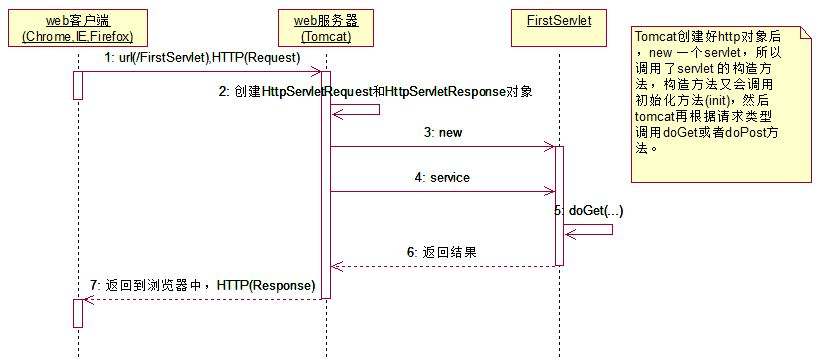
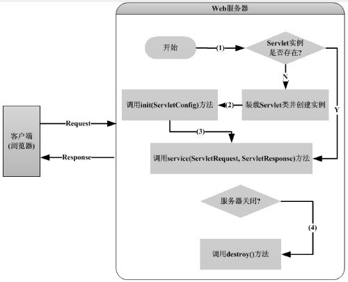
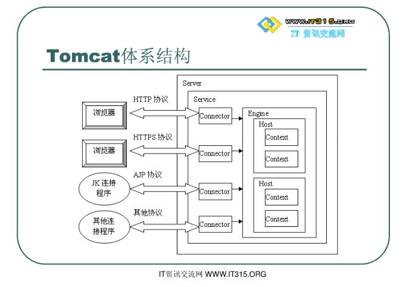
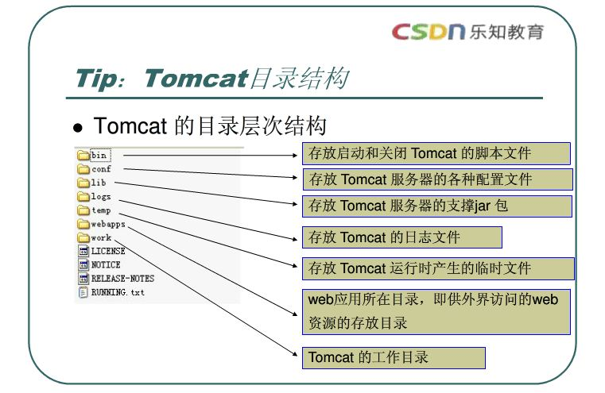

一、JSP工作原理 JSP
在一个JSP文件第一次被请求时，JSP引擎把该JSP文件转换成为一个servlet。而这个引擎本身也是一个servlet，在JSWDK或WEBLOGIC中，它就是JspServlet。
JSP引擎先把该JSP文件转换成一个Java源文件，在转换时如果发现jsp文件有任何语法错误，转换过程将中断，并向服务端和客户端输出出错信息；如果转换成功， JSP引擎用javac把该Java源文件编译成相应的class文件。然后创建一个该SERVLET的实例，该SERVLET的jspInit()方法被执行，jspInit()方法在servlet的生命周期中只被执行一次。然后jspService()方法被调用来处理客户端的请求。
对每一个请求，JSP引擎创建一个新的线程来处理该请求。如果有多个客户端同时请求该JSP文件，则JSP引擎会创建多个线程。每个客户端请求对应一个线程。以多线程方式执行可大大降低对系统的资源需求,提高系统的并发量及响应时间.但应该注意多线程的编程限制，由于该servlet始终驻于内存，所以响应是非常快的。
如果.jsp文件被修改了，服务器将根据设置决定是否对该文件重新编译，如果需要重新编译，则将编译结果取代内存中的servlet，并继续上述处理过程。虽然JSP效率很高，但在第一次调用时由于需要转换和编译而有一些轻微的延迟。此外，如果在任何时候如果由于系统资源不足的原因，JSP引擎将以某种不确定的方式将servlet从内存中移去。当这种情况发生时jspDestroy()方法首先被调用, 然后servlet实例便被标记加入"垃圾收集"处理。
在jspInit()中进行一些初始化工作,如建立与数据库的连接，或建立网络连接，从配置文件中取一些参数等，在jspDestory()中释放相应的资源。

首先 浏览器向Web服务器提出访问页面的请求[request]然后 JSP容器[Tomcat]将JSP转化成Sevlet,产生的servlet经过编译后生成类文件,然后把类文件加载到内存进行执行.最后 由Web服务器[response]将结果响应给客户端浏览器
Tomcat到底是JSP容器还是Web服务器,很多书都没有明确的说明,这两者有什么区别,也没有具体说明. servlet容器的主要任务是管理servlet的生命周期;web服务器是来管理和部署web应用的. 但是在开发中不管是.net、JSP还是ASP的环境部署，都没有明确的将这两个功能分开，为什么又在这里单独的讲明白呢？ 只是为了单纯的解释生命周期么？
JSP在第一次执行后即被编译成类文件,当再次调用时,如果JSP容器没有发现该jsp页面被修改,就会直接执行编译后的类文件,而不是重新编辑Sevlet.当然,如果JSP容器发现该JSP页面被修改,就需要重新编译. 思考题：在什么情况下会有负载优势。

tomcat运行流程假设来自客户的请求为：http://localhost:8080/test/index.jsp
1.请求被发送到本机端口8080，被在那里侦听的Coyote HTTP/1.1 Connector获得
2.Connector把该请求交给它所在的Service的Engine来处理，并等待Engine的回应
3.Engine获得请求localhost:8080/test/index.jsp，匹配它所有虚拟主机Host
4.Engine匹配到名为localhost的Host（即使匹配不到也把请求交给该Host处理，因为该Host被定义为该Engine的默认主机）
5.localhost Host获得请求/test/index.jsp，匹配它所拥有的所有Context
6.Host匹配到路径为/test的Context（如果匹配不到就把该请求交给路径名为""的Context去处理）
7.path="/test"的Context获得请求/index.jsp，在它的mapping table中寻找对应的servlet
8.Context匹配到URL PATTERN为*.jsp的servlet，对应于JspServlet类
9.构造HttpServletRequest对象和HttpServletResponse对象，作为参数调用JspServlet的doGet或doPost方法
10.Context把执行完了之后的HttpServletResponse对象返回给Host
11.Host把HttpServletResponse对象返回给Engine
12.Engine把HttpServletResponse对象返回给Connector
13.Connector把HttpServletResponse对象返回给客户browser

jdk时编译运行java类文件必须的工具，tomcat是一种web服务中间件，运行jsp不需要tomcat，但必须要有jdk，如果是开发jsp和发布jsp的产品需要用到web中间件了， tomcat是中间件的一种